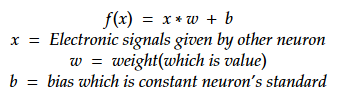

I tried implimenting Deep Learning !!
What is DeepLearning?
DeepLearning is one of AI(Artifical Intelligence). It is imitated brains of living beings. Brains of living beings is made up a lot of a group of neuron. When neuron receive eloctronic signals, the neuron give electronic signals to another neuron. This mechanism is used in the brain.
DeepLearning can be implemented to reproduce neuron's mecanism.
What is neuron?
We can't talk about DeepLearning without neuron. But neuron's nechanism is simple. Look at Figure01.
Figure01
If neuron receive electronic signals to another neuron above the standard, the neuron will be excitement and give electronic signals another neuron. But each neuron has difficult standard.

Figure02
Figure02 is the formura which neuron received electronic signals. "w" is weight (in other words is value). It means strength of neuron-to-neuron relationship. Neurons are not always friends as neurons are not as good friends as all people are. So, "x" which receive electronic signal other neuron is multipled "w".
It is added "b" too. Neuron's excitement are disjoined. So the formula has to conform it. And Figure03 is formula all of electronic signals it received.
Figure03
Neuron's feature is descripted the above. The next work is express neuron's excitement from total of electronic signals. I'll show you graphs which types of excitementof neuron.
Figure04
Figure05
Figure06
Network of neuron
Imagine if you connect many neuron. Neurons can send many information as electronic signals. And can calcuate advance calcuation as possible as image proccesing.